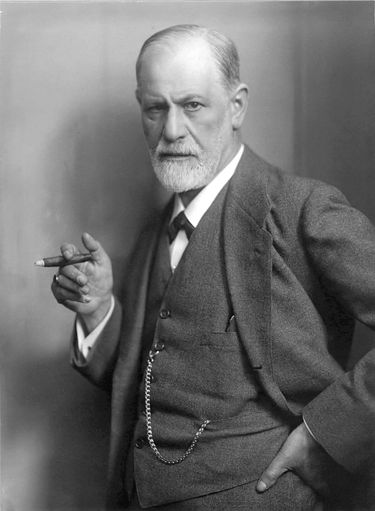

Sigmund Freud

Precursor: Sigmund Freud
Aportes: Introdujo conceptos como el inconsciente, los mecanismos de defensa y las etapas psicosexuales.
Enfoque e Ideas Principales: Freud propuso que la personalidad se desarrolla a través de una serie de etapas psicosexuales, y que el inconsciente juega un papel crucial en nuestras acciones y decisiones.
Diferencias y Similitudes: Comparado con la teoría conductista, Freud se centra en procesos internos y subconscientes, mientras que el conductismo enfatiza el aprendizaje observable.
Abordaje Terapéutico: La terapia psicoanalítica se basa en el análisis de sueños, asociaciones libres y la transferencia para explorar el inconsciente.